商品部 — 康雷 & 联欣系统操作指南
商品部商品部商品部-联欣&康雷系统使用培训手册商品部-联欣&康雷系统使用培训手册撰写： IT技术策划-黄文君 适用部门 ： 商 品 部 撰写： IT技术策划-黄文君 适用部门 ： 商 品 部
适用背景
联欣软件作为订货端，供买手/店铺/客户经理等下单使用，联欣端的商品资料获取途径为：康雷ERP——>联欣订货后台康雷软件作为订单处理后台，处理市场部审核的各类型订单，通过订金、回款项目等控制发货数量，根据订货量进行截单、配货操作。品牌方仓库接收到商品部的出货指令任务后，根据指令发货，发货后同步订单发货状态到联欣系统；
二、业务流程
商品基础： 联欣系统的商品数据来源于康雷ERP，通过联欣后台同步。这是订货的前提。
下单与审核： 买手/店铺/客户经理在 联欣订货小程序 下单 -> 市场部在联欣后台 审核订单。
订单推送： 联欣后台将审核通过的订单 推送给康雷ERP，成为 “渠道订单”。
订单处理（康雷核心）：
截单（转采购）： 商品部 在康雷ERP中对渠道订单进行 截单 操作。这通常意味着根据订单需求 生成采购需求/采购单（如果库存不足），或者锁定库存（如果库存充足）。（关键控制点）
货款控制： 康雷ERP严格管理 订金 和 回款。系统会监控订单的 货款收齐状态。
配货（转发货）： 只有收齐货款的订单，商品部 才能在康雷ERP中进行 配货 操作。这通常涉及生成详细的 发货指令/发货单，明确要发什么货、发多少。（关键控制点）
仓库发货： 品牌方仓库 接收到来自康雷ERP的 出货指令任务 后，进行拣货、打包、发货等实物操作。
状态同步： 仓库发货操作完成后，发货状态（包括物流信息） 会从康雷ERP 同步回联欣系统。
终端查看： 下单用户（买手/店铺/客户经理）可以在 联欣订货小程序 上查看到订单的发货状态和物流信息。
系统资料建档说明
基础建档

货品部分
权限分类：可以对货品进行权限分类，初始数据库有默认值，按照品牌名称创建不同的分类，在权限控制不同的角色及用户看到不同的货品；
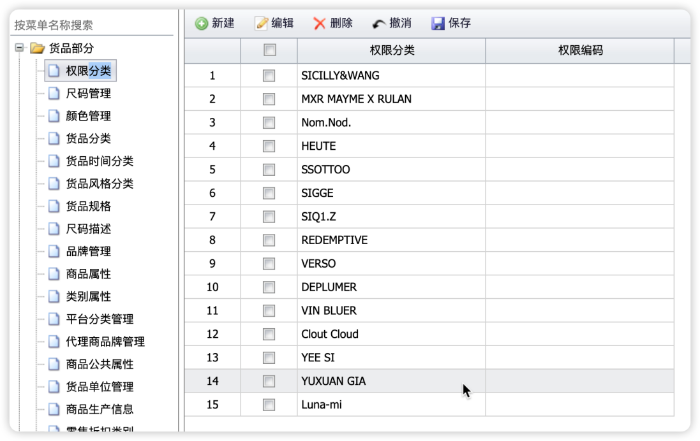
尺码管理：新增尺寸组（填写尺码组、尺码组名称），可供不同的货号基础信息维护时选择尺寸组（在系统里需建立企业所用的各不同尺寸组，如上衣尺寸与裤子尺寸分类不一样，需分别建立上衣尺寸组和裤子尺寸组）。在尺寸组下可以维护不同的尺寸值，不同的货号下的条码具体拥有什么尺寸值也是不一样的，需要客户给不同的条码维护该条码的尺寸；
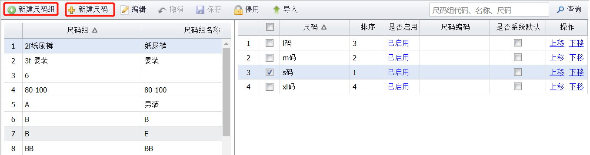
颜色：新增颜色组，再新建颜色，填写颜色代码、描述，可供货号下的条码基础资料的维护时选择不同的颜色；
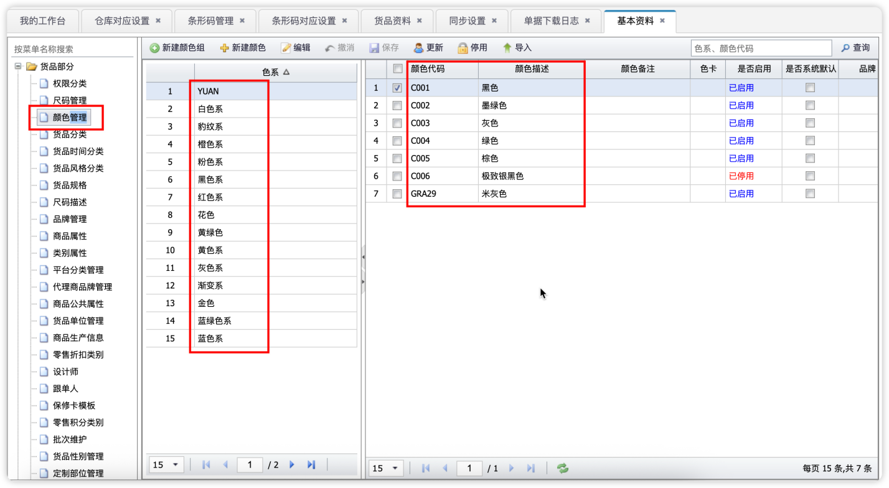
货品分类：参照上图，可对货品进行多级分类，在新增或导入商品资料的时候，必须将维护好的分类关联进去；
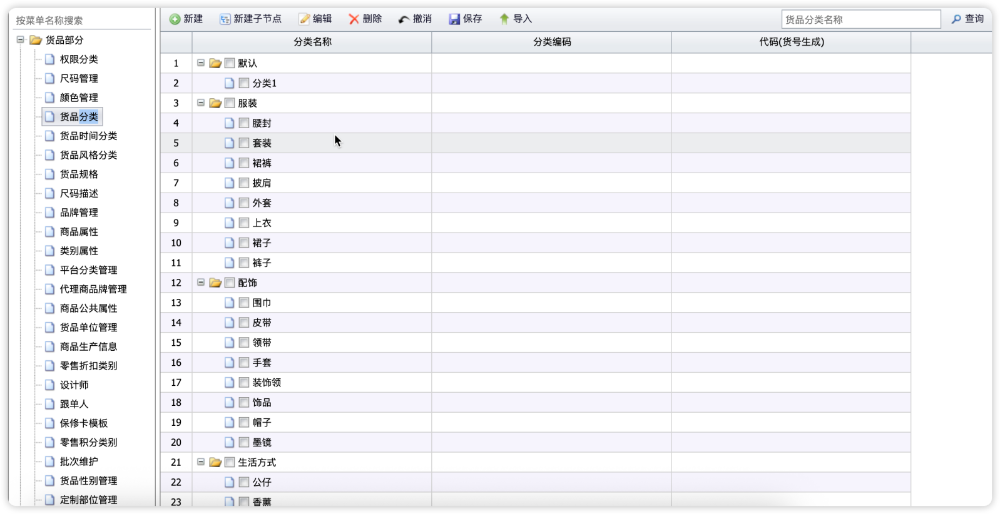
货品时间分类：可对时间进行三级分类，年份，季节，上市波段，在空白处右键进行新建或者编辑；
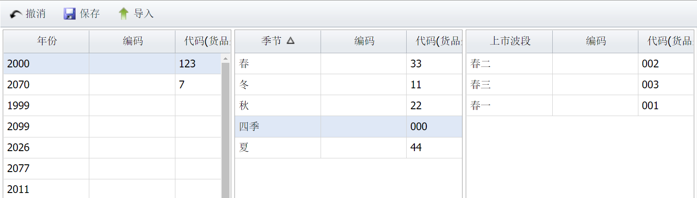
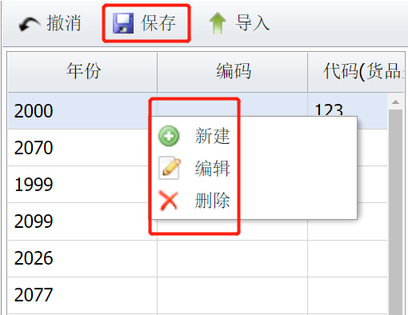
货品规格：二维分类，一般默认为0，多数用在于西服或者文胸类产品，相当于西服的版型或者文胸的罩杯，牛仔裤的内长等；
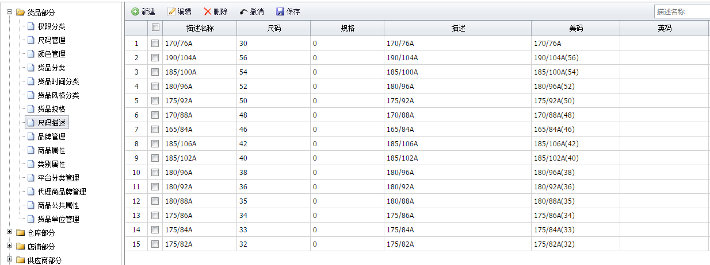
品牌管理：维护货品的品牌；按照品牌名称新建；
商品公共属性：系统提供无限个自定义商品属性，用户可以维护需要使用的属性名称和各个属性下的属性值，维护好后，可以在维护货号基础信息时定义不同货号的不同属性分类（特定情况下使用）；
平台分类管理：微商城对商品的分类，如上图，货品资料里面设置完可在微商城进行分类展示，筛选；
代理商品牌管理：特定情况下使用；
商品公共属性：系统提供25个自定义商品属性，用户可以维护需要使用的属性名称和各个属性下的属性值，维护好后，可以在维护货号基础信息时定义不同货号的不同属性分类；
货品单位管理：维护货品的单位，如套、个、件等；
仓库、供应商基础信息
仓库、供应商权限分类：可以对品牌的仓库进行权限分类，初始数据库有默认值，按照品牌名称创建不同的仓库和供应商的权限分类；
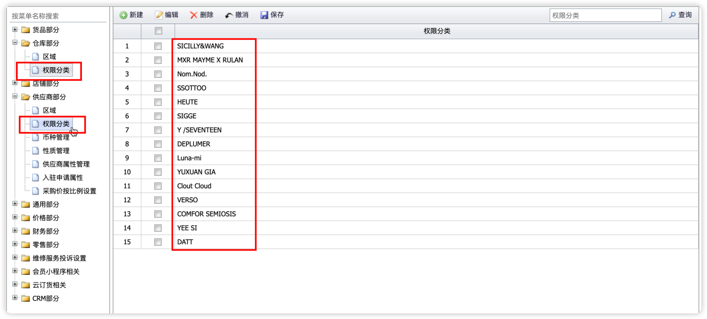
结算户口
结算户口：由联欣创建客户资料后推送过来，户口编号为客户手机号
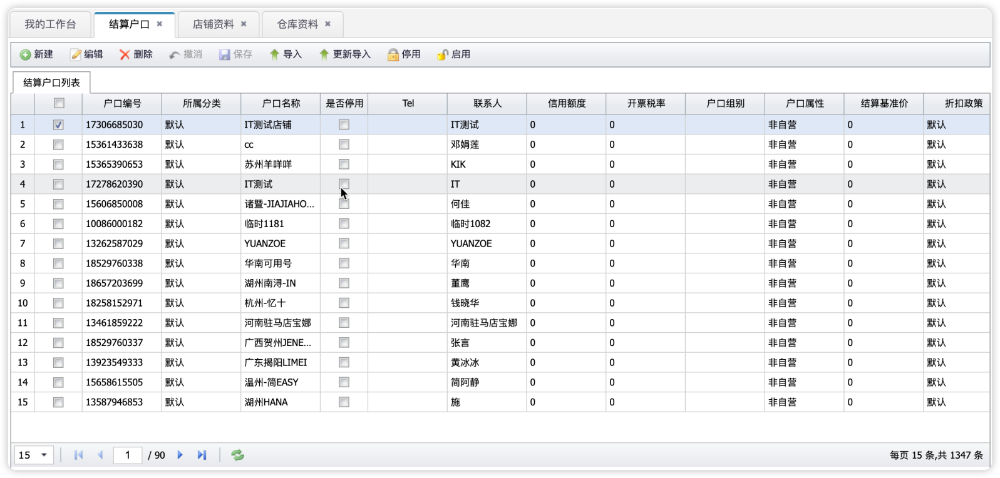
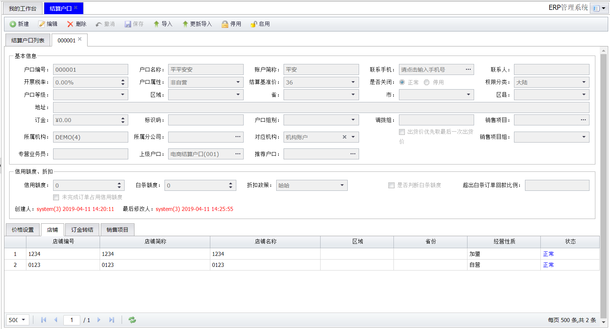
店铺：可看到该结算户口下有多少家店铺（联欣后台客户经理填写店铺资料审核后后会自动生成）；
商品档案
货品资料
货品资料：新增货号信息，权限分类要选择对应品牌的权限；涉及到聚水潭同步库存的品牌要求品牌提供相应的聚水潭商品编码。
新增货号，需要填写货号、货品名称、状态、吊牌价、分类、品牌、权限分类、折扣类型、供应商编号、尺寸组、颜色、规格及各个属性值；
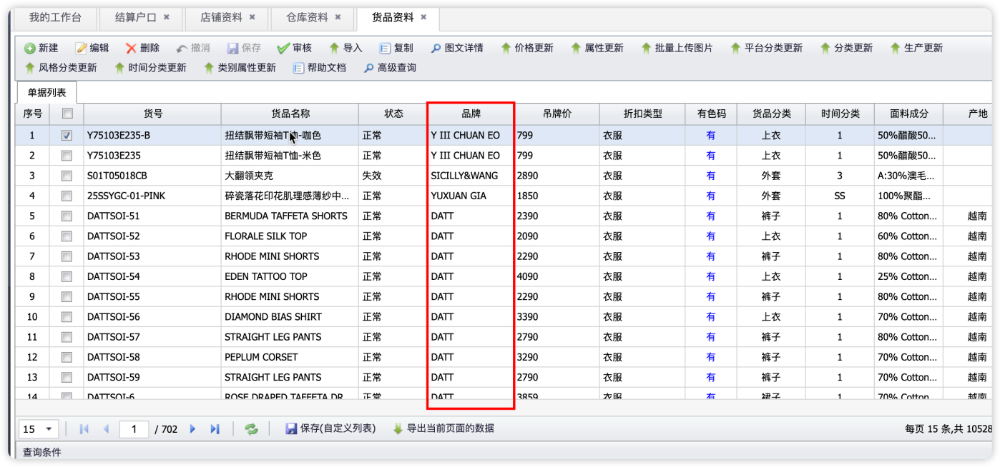
涉及到聚水潭同步库存的商品资料需要在【条形码对应】做导入对应关系
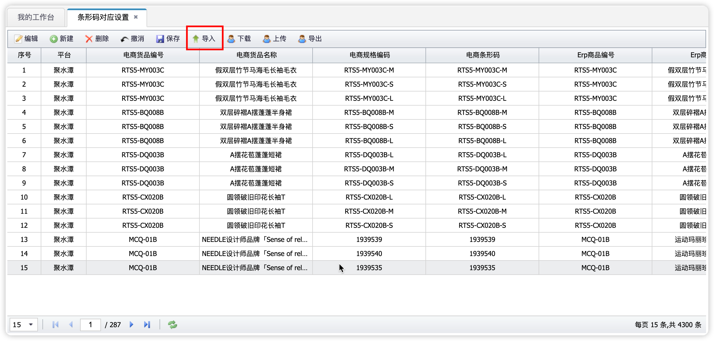
对应关系按照下图excel规则填写导入
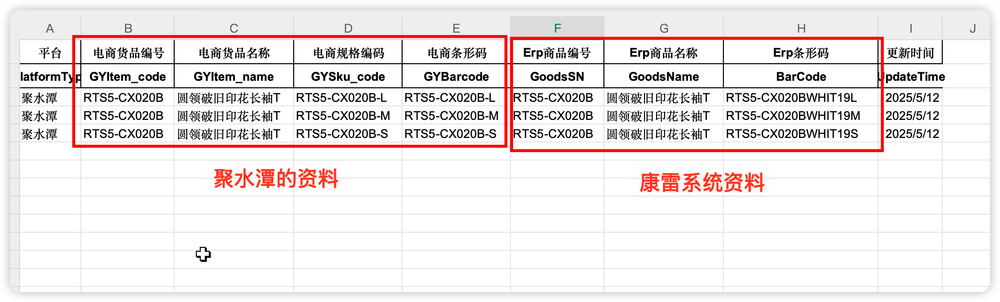
价格信息：基础资料里面的自定义价格类型，可定义多种价格
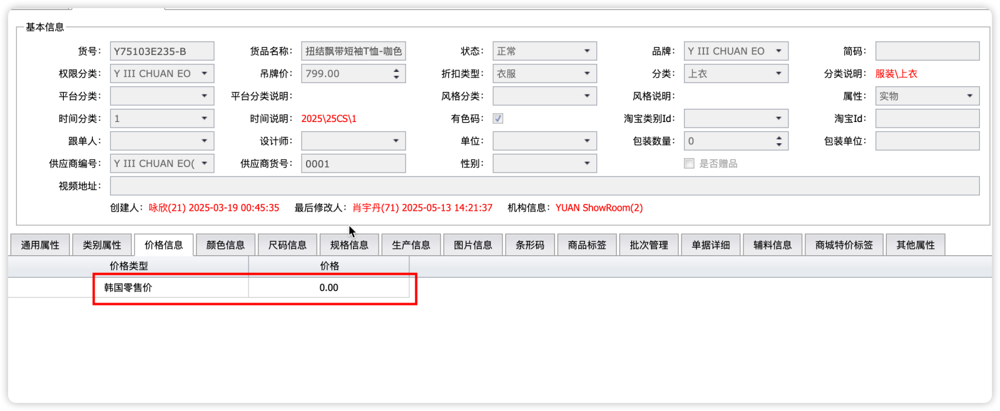
颜色信息：款号对应颜色，注意，新增保存后无法删除（做错的选择停用颜色）；
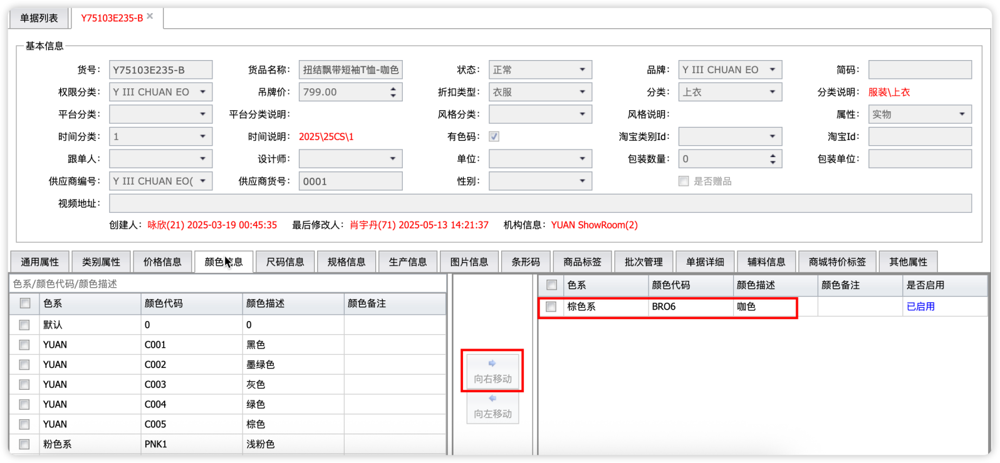
尺码信息：可查看到款号对应的尺码组以及对应尺码（有色码情况下使用）；
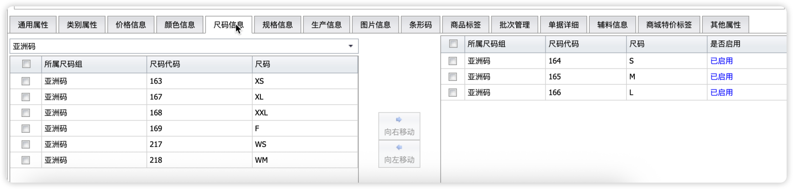
规格信息：二维分类，一般默认为0
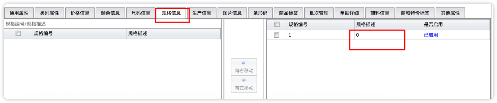
图片信息：由货品图片上传工具进行上传，（操作详见上传图片流程说明文档）；
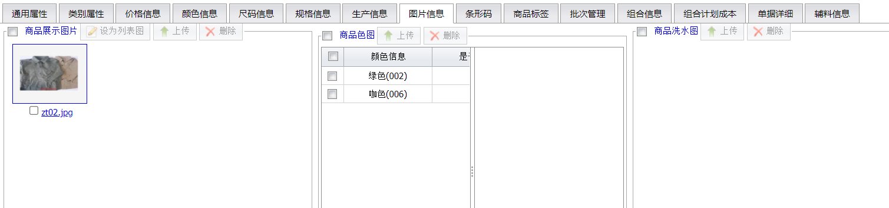
货品导入：在excel里整理好商品及相应的资料、颜色、尺寸、SKU等，可直接从excel文件批量导入现成的货品资料，具体模板找咏xin要一下。
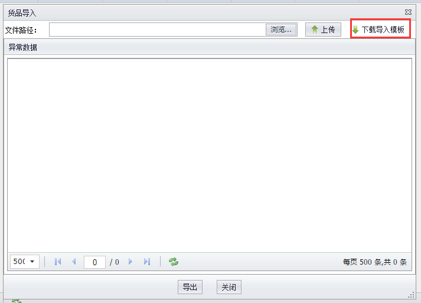
条形码资料
目前的条形码是由系统按照，货号+颜色编号+尺码 自动生成的，没有特殊情况不需要管理
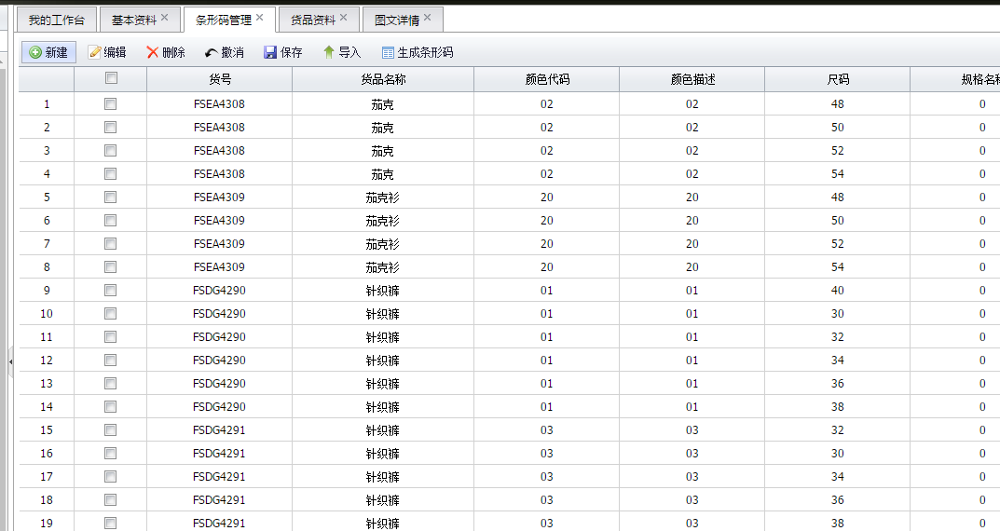
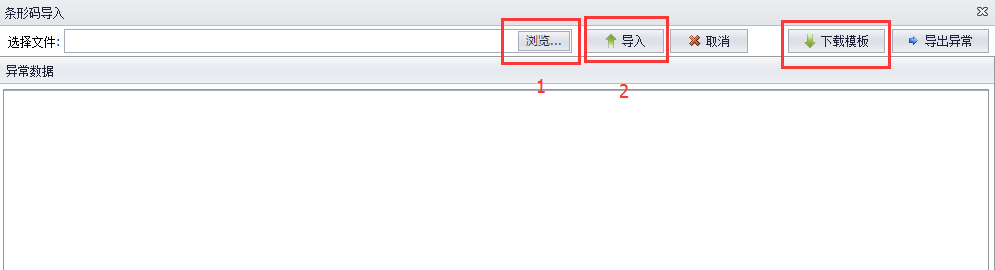
条码导入：在excel里整理好商品及相应的颜色、尺寸后，可直接从excel文件批量导入现成的条码。
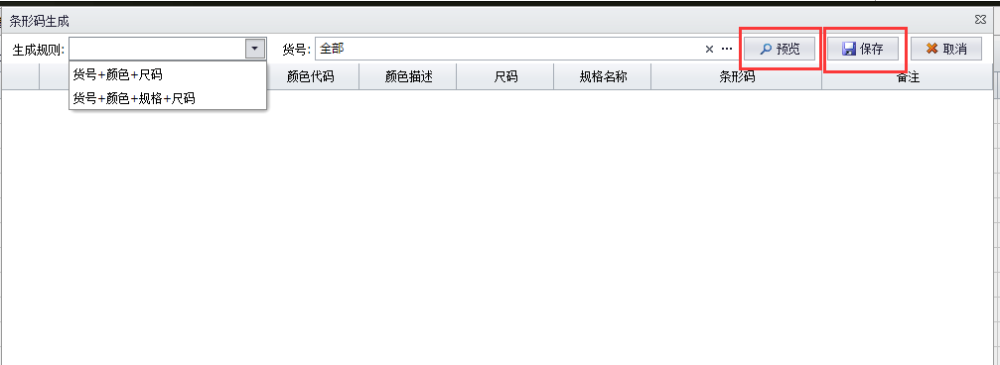
在【条形码管理】页，点击【生成条形码】，选择生成规则，点击【预览】，系统计算条形码并显示，系统汇总出所有需要建立条形码的每个货号的各个颜色、尺码的明细列表，点击【保存】，【确定】后，完成条形码的建立。
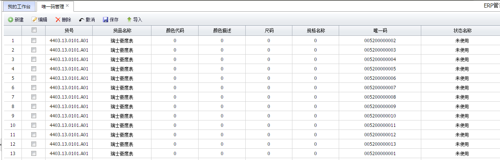
店铺资料
由联欣后台审核客户资料后自动创建客户的店铺资料
店铺资料：新增店铺资料（填写店铺编号、店铺简称、店铺名称、权限分类、所属结算户口、店铺组别、经营模式等），可供其它业务单据新增时选择店铺资料（例如零售核销单、仓库出货单、调拨单等的新增时，都需要选择店铺）。
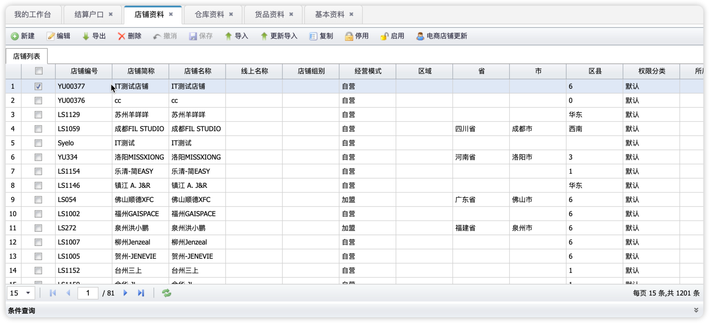
仓库资料
仓库资料：新增仓库资料（填写仓库编号、仓库名称、权限分类、仓库性质、属性描述、控制参数值等），可供其它业务单据新增时选择仓库资料（例如采购单、仓库出货单、调拨单的新增时，都需要选择仓库）。
其中：
权限分类需要选择与品牌一样的权限分类，云仓的仓库编号要与供应商编号一样，现货期货的仓库编号在后面加-1区分；仓库的区域选择品牌直发仓。
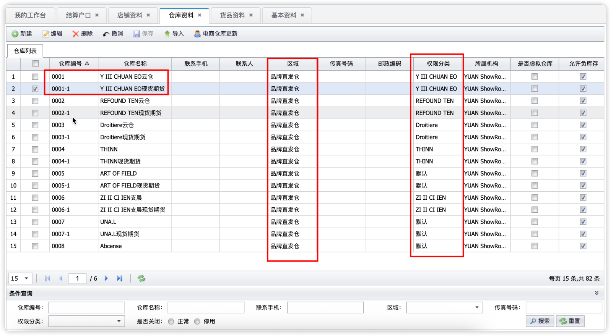
供应商资料
供应商档案：新增供应商档案（填写供应商编号、供应商名称、供应商简称、权限分类、联系方式、供应商属性等），可供其它业务单据新增时选择供应商档案（例如采购单新增时，可以选择供应商，新增货品时也可选择供应商）。
其中：
权限分类需要选择与品牌一样的权限分类，供应商编号要跟品牌的云仓仓库编号一致
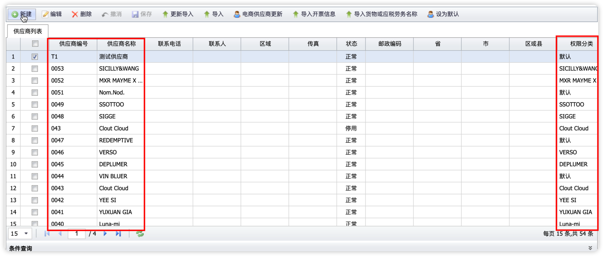
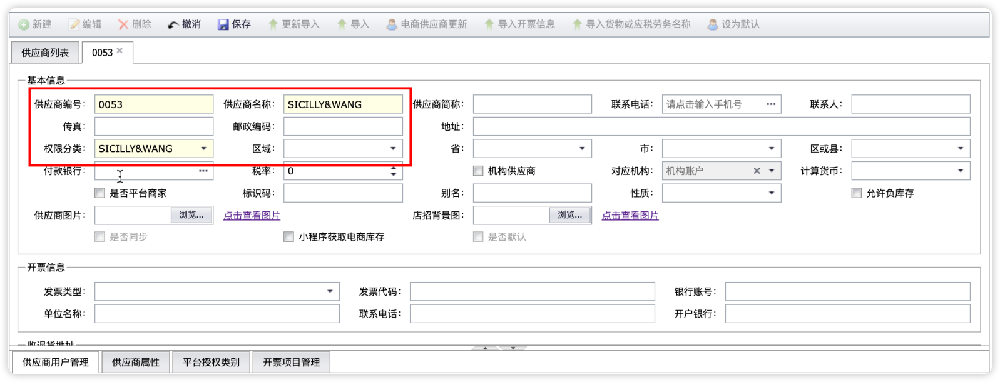
设置采购价比例
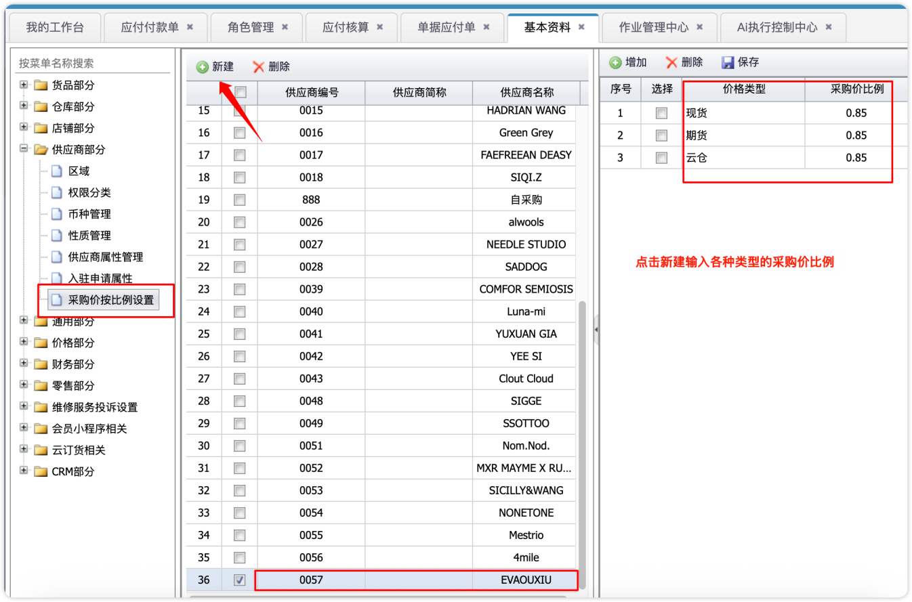
系统运作流程说明
销售业务流程图


系统登陆
登陆地址：http://ji121.123580.com/
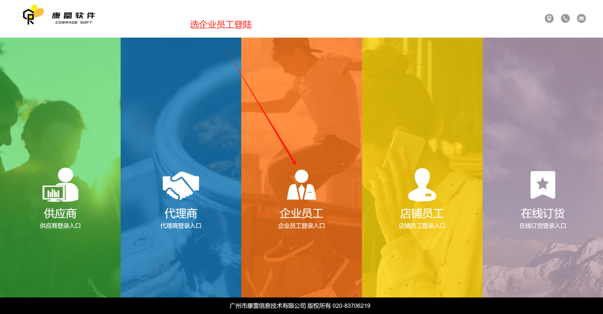
云仓订单流程说明
云仓单自动生成渠道订单和出货指令单和100%的回款单，不需要再经过商品部截单和转发货操作，市场部可以直接检查出货指令单没有问题便直接提交。

检查康雷生成的渠道订单数量金额与联欣是否一致

检查出货指令单号上的收件人信息是否正确，确认无误后提交单据通知品牌方发货

期货订单业务流程
期货订单审单转采购流程
期货订单只生成渠道订单和50%的订金收入单，需要经过商品截单转采购后通知品牌生产，待品牌生产完毕可以发货时，市场部把尾款收齐并做50%的回款单经财务审核后通知商品部操作转发货。

商品截单：通过渠道订单模块筛选品牌、截单时间段后跟市场部核对订单数据，无误后操作转采购

订单转采购（截单的具体操作）：订单审核无误后批量转采购单

生成采购单，检查无误后提交采购单，通过报表把明细导出发给品牌通知生产；

期货订单确认完采购明细后，需要预付给品牌方50%的订金款，在康雷系统对应的品牌采购单列表找到对应的采购单点击【转预付款】，填写本次采购金额的定金，按照钉钉OA流程填写对应的内容

预付款单据保存好后将单号同步到钉钉OA申请流程告知财务预付款的单号，财务审批付款并提交

期货订单转发货流程

品牌期货订单库存到位后通知YUAN商品可配货，商品部通知市场部收取客户尾款，市场部的回款单通过财务审核后，商品部操作转发货
客户打款且市场部做完回款单后，商品可以点击渠道订单上的转发货，生成出货指令单，可以截图通知品牌方发货

选择出货的品牌仓库后，检查出货指令单的数量和金额，有需要调整明细的可以勾选货号后鼠标右键删除此货号，本次将不发此货号

保存后回到单据列表，点订金结转

点击订金结转，期货类型的如果渠道订单界面显示的订金比例为100%的，出货指令订金结转比例为100%；
如果渠道订单界面显示的订金比例是50%且有对应回款单的结转比例为50%

订金结转后提交出货指令单通知品牌方发货

现货订单业务流程
现货订单生成渠道订单、回款单（下单时市场部提交需要财务审核）、出货指令单，截单转采购后点击转发货，财务审核通过回款单后才可提交出货指令

品牌通知库存到位，可以按排客户现货订单配发货了
找到相应渠道订单点转发货

100%的金额结转成货款后提交出货指令单通知品牌发货


同一订单二次配货出货
按货号查找出未发完货的订单号

选订需要发货订单点转发货

生成【出货指令单】保存后提交单据，通知品牌方发货即可
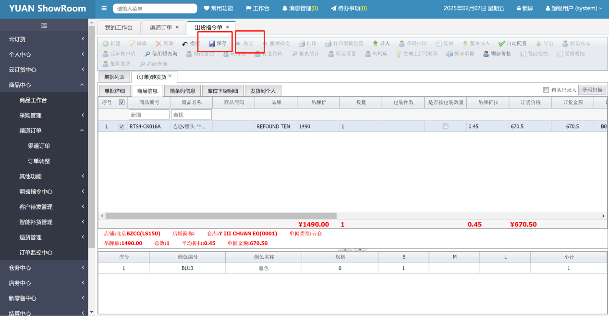
反审核单据删单
反审核流程是做单顺序反向操作，例如期货订单正向顺序为：
渠道订单、50%订金收入单、50%回款单、出货指令单、订金转货款----反审核顺序为逆向
云仓订单：需要删除康雷生成三个单据【出货指令单】、【回款单】、【渠道订单】
现货订单：回款单、出货指令单、渠道订单
期货订单：订金转货款、订金收入单、出货指令单、回款单、渠道订单

客户订单取消、换货、退货
订单取消：已把期货订金付给品牌，品牌没货发需要取消的，做【采购退货单】
整张采购单的付款金额为取消款的订金金额。
客户订单取消款：使用订单调整功能，选择对应的商品，店铺，选择订单取消保存提交后，对应订单的款便取消了
订单退货：已发货订单客户退货做【渠道采购退货指令单】填写退货的品牌、退货店铺，手工单号填写原渠道订单后录入退货明细后（注意退货价跟采购价的区别，一个是客户订货价，一个是采购退货价）保存提交；

换货：
2.1同款同金额换货直接线下与品牌沟通寄换；
2.2换不同款金额的：市场部重新在联欣下单；
客户退货：商品部在康雷系统做【渠道采购退货指令单】，填写退货的品牌、退货店铺，手工单号填写原渠道订单后录入退货明细后保存提交；
手动输入货号：鼠标光标点击商品编号输入框输入款号后按键盘回车↩ 键，弹出颜色尺码选择界面，在此输入该款号的发货的颜色和尺码；
录入所有发货商品后核实发货数量无误，点击保存、提交按钮；
联欣系统操作手册
资料设置：新增仓库、新增品牌、上传款主图
有新品牌合作时，在康雷新建好了品牌、供应商、仓库之后需要在联欣创建对应的品牌云仓，期货现货的不需要创建仓库。
新增仓库：在字典管理的仓库选项点击字典项新增仓库信息，仓库编号需要跟康雷系统的编号一致

新增品牌信息：在款式属性里添加新品牌信息

上传图片可以批量上传也可以单个商品上传

二、主题管理：主题对应小程序的品牌列表界面。
1、添加主题：填写主题名称、业务类型、主题分组、发货仓、主题时间一般设置为后几天，不要设置到操作的当天、主题封面图等信息后提交

提交完后设置该主题的时间、简介、店铺
店铺设置为自动添加的模板，勾选yuan组织树，之后新增加的店铺都会自动添加到该主题


主题商品添加：在主题商品界面点击选择商品

按照品牌选择该主题的商品

小程序布局替换：轮播图管理、功能模块、推广图管理
轮播图管理：首页的轮播图设置为推广轮播图

功能模块：小模块对应期货、云仓入口，选择图片设置对应的主题即可

推广图管理：设置为公司公众号推文，需要获取为图片格式的上传